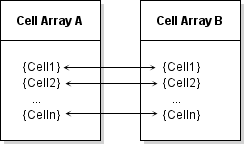
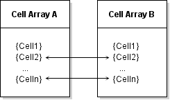

Data Access in Typed, Cell, and Structure Arrays
The MATLAB® Data API used by C++ MEX functions provides the same copy-on-write semantics used by functions written directly in MATLAB. A MEX function can duplicate a data array passed to it, but this duplicate is a shared copy of the original variable. A separate copy of the data is made when the MEX function modifies values in the array.
When you call a MEX function, the matlab::data::Array inputs are shared
copies of the MATLAB variables passed to the MEX function. Shared copies provide an advantage
when the MEX function:
Does not modify a large array passed to the MEX function.
Modifies certain fields of a structure that is passed as input without making a copy of the entire structure.
Modifies a cell in a cell array that is passed as input without causing a deep copy of the cell array
Modifies an object property that is passed as input without making a deep copy of the object.
Shared Copies
This example code benefits from the use of shared copies when calculating the
average value of an image array. Copying the input array to a
const
matlab::data::TypedArray<T>,
which supports iterators, enables the use of a range-based for
loop to perform the calculation, but ensures that the array is not copied.
#include "mex.hpp"
#include "mexAdapter.hpp"
using matlab::mex::ArgumentList;
using namespace matlab::data;
class MexFunction : public matlab::mex::Function {
ArrayFactory factory;
public:
void operator()(ArgumentList outputs, ArgumentList inputs) {
double sm = 0;
const TypedArray<uint8_t> inArray = inputs[0];
for (auto& elem : inArray) {
sm += elem;
}
outputs[0] = factory.createScalar(sm / inArray.getNumberOfElements());
}
};Save the MEX function source code in a file called
aveImage.cpp. You can use this function to find the mean value of
an array of topographic data. Load the topo.mat file into the
MATLAB workspace and pass the data array to the MEX function.
mex aveImage.cpp load topo d = uint8(topo); % convert data to use aveImage m = aveImage(d)
m = 73.5487
Modify Cell Array in MEX Function
When you pass a cell array to a MEX function, its MATLAB Data API representation, matlab::data::CellArray, is essentially a
matlab::data::Array that contains a
matlab::data::Array in each cell. This design enables each
contained array to be a shared copy until modified.
When you modify a cell of a cell array in a MEX function, only the array contained in that cell is unshared, not the entire cell array. For example, suppose that you copy cell array A to cell array B. The value of each cell is shared.

If you modify Cell1 in cell array B, the array in that cell is
no longer shared with Cell1 in cell array A. However the values
of all other cells remain shared so that the entire cell array does not need to be
copied.

This example shows how to pass a cell array to a MEX function and modify one cell in a cell array without causing copies of the data in the other cells. The example loads image data into the MATLAB workspace and creates a cell array that contains the image data, caption, and colormap.
load durer
whosName Size Bytes Class X 648x509 2638656 double caption 2x28 112 char map 128x3 3072 double
Assign each variable to a different cell.
durerCell{1} = X;
durerCell{2} = caption;
durerCell{3} = map;This MEX function uses std::move to move the input cell array
to a matlab::data::CellArray, which provides access to individual cells. The
only data modified is the caption that is stored in one cell of the cell array. To
modify that cell:
Get a
matlab::data::Reference<TypedArray<T>>reference to the array in the cell containing the caption.Assign the new value to the reference as a
matlab::data::CharArraybecause the returned value is a MATLAB character vector.
#include "mex.hpp"
#include "mexAdapter.hpp"
using matlab::mex::ArgumentList;
using namespace matlab::data;
class MexFunction : public matlab::mex::Function {
ArrayFactory factory;
public:
void operator()(ArgumentList outputs, ArgumentList inputs) {
checkArguments(inputs);
CellArray imageCell = std::move(inputs[0]);
TypedArrayRef<char16_t> cellRef = imageCell[1];
cellRef = factory.createCharArray("Albrecht Durer's Melancolia with a magic square" );
outputs[0] = imageCell;
}
void checkArguments(ArgumentList inputs) {
std::shared_ptr<matlab::engine::MATLABEngine> matlabPtr = getEngine();
if (inputs[0].getType() != ArrayType::CELL) {
matlabPtr->feval(u"error", 0, std::vector<Array>
({ factory.createScalar("Input must be cell array") }));
}
}
};Save this code in a file named modifyCellArray.cpp, build the
MEX file, and call the function.
mex modifyCellArray.cpp
durerCell = modifyCellArray(durerCell);The returned cell array contains the new character array assigned in the MEX function.
durerCell{2}ans =
'Albrecht Durer's Melancolia with a magic square'For more information on working with cell arrays, see C++ Cell Arrays.
Modify Structure in MEX Function
The MATLAB Data API defines matlab::data::StructArray to represent
MATLAB
struct arrays. Each field in a
StructArray itself contains an array. Therefore, you can
modify a field of a StructArray passed to a MEX function without
causing the whole array to be copied. Fields not modified remain shared with the
input array fields.
The StructArray class provides member functions to access the
fields of a structure:
getFieldNamesreturns begin and end iterators providing access to field names.getNumberOfFieldsreturns the number of fields in the structure.
For example, you can generate a vector of field names and use these names to
access the data in the structure. This code assumes that the field contains an array
of type double.
auto fields = myStruct.getFieldNames();
std::vector<matlab::data::MATLABFieldIdentifier> fieldNames(fields.begin(), fields.end());
// Get the data from one field
matlab::data::TypedArray<double> field1 = myStruct[0][fieldNames[0]]Assign new values to a field by creating an array of the correct type.
myStruct[0][fieldNames[0]] = factory.createArray<double>({ 1,5 }, { 1, 2, 3, 4, 5 });Create a reference to a field of a structure using matlab::data::Reference<T>,
which you can pass to functions that access the values in the field. References
enable you to get the value of a field, to assign a new value to the field, and to
create another array that refers to the same value. For example, this code creates a
reference to a field containing an array of doubles.
auto fields = myStruct.getFieldNames();
std::vector<matlab::data::MATLABFieldIdentifier> fieldNames(fields.begin(), fields.end());
matlab::data::TypedArrayRef<double> field1Reference = myStruct[0][fieldNames[0]]Assign new values to the field using this reference.
field1Reference = factory.createArray<double>({ 1,5 }, { 1, 2, 3, 4, 5 });Assign to Structure Field
This example passes a MATLAB structure to a MEX function. The structure contains two large data
fields, and two fields to contain scalar values assigned by the MEX function.
The MEX function calculates the average value for the numbers in each array and
assigns these values to the Average field of the respective
structure.
This MATLAB code creates the structure array and passes it to the MEX function
built from the modifyStruct.cpp file described here.
s = struct('Average',{[],[]},... 'Data',{rand(1,1000),randi([1,9],1,1000)}); s = modifyStruct(s);
Here is the MexFunction::operator() function. It performs
these operations:
Call the
checkArgumentfunction to check the inputs and outputs for size and type.Assign the input to a
matlab::data::StructArrayvariable.Call the
calcMeanfunction to compute the averages.Assign the updated structure array to the MEX function output.
#include "mex.hpp"
#include "mexAdapter.hpp"
using matlab::mex::ArgumentList;
using namespace matlab::data;
class MexFunction : public matlab::mex::Function {
public:
void operator()(ArgumentList outputs, ArgumentList inputs) {
checkArguments(outputs, inputs);
StructArray inStruct(inputs[0]);
calcMean(inStruct);
outputs[0] = inStruct;
}The checkArguments function performs these checks:
The number of inputs equals one.
The number of outputs is not greater than one.
The input is a MATLAB structure array.
void checkArguments(ArgumentList outputs, ArgumentList inputs) {
std::shared_ptr<matlab::engine::MATLABEngine> matlabPtr = getEngine();
ArrayFactory factory;
if (inputs.size() != 1) {
matlabPtr->feval(u"error", 0,
std::vector<Array>({ factory.createScalar("One input required") }));
}
if (outputs.size() > 1) {
matlabPtr->feval(u"error", 0,
std::vector<Array>({ factory.createScalar("Too many outputs specified") }));
}
if (inputs[0].getType() != ArrayType::STRUCT) {
matlabPtr->feval(u"error", 0,
std::vector<Array>({ factory.createScalar("Input must be structure") }));
}
}The calcMean function calculates the average value for each
set of numbers in the Data fields and assigns these values to
the Average field of the respective structure.
void calcMean(StructArray& inStruct) {
ArrayFactory factory;
auto fields = inStruct.getFieldNames();
std::vector<MATLABFieldIdentifier> fieldNames(fields.begin(), fields.end());
double sm = 0;
for (auto i = 0; i < 2; i++) {
const TypedArray<double> data = inStruct[i][fieldNames[1]];
for (auto& elem : data) {
sm += elem;
}
inStruct[i][fieldNames[0]] = factory.createScalar(sm / data.getNumberOfElements());
}
}
};Example of Cell and Structure Arrays
For a related example that uses cell and structure arrays, open this source
file in the MATLAB editor phonebook.cpp.
See Also
matlab::data::MATLABFieldIdentifier